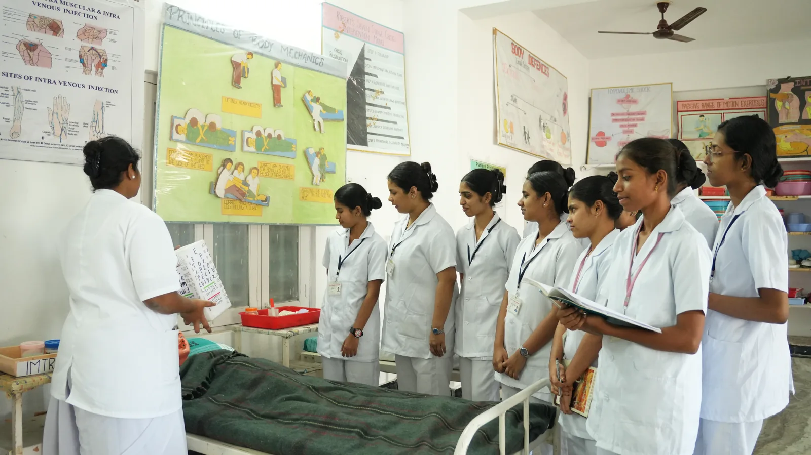
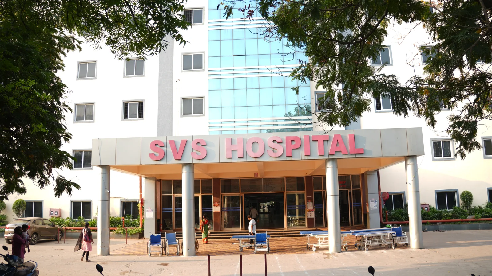

01 / MEDICINE
01 / MEDICINESVS Medical College
Explore medical education at the heart of our medical campus and teaching hospital.
Explore Medicine ↗Medical, dental and nursing education in a community
where knowledge, clinical learning and compassionate care come together.
SVS Group of Institutions brings together medical, dental and nursing education with teaching hospitals and clinical spaces in Mahabubnagar, Telangana.
From the classroom to the clinic, our community connects academic learning with the human purpose of healthcare. Discover our institutions, explore the campuses and find the information you need for your next step.
Explore academics ↗Explore the distinct academic and clinical environments of our medical, dental and nursing institutions.
01 / MEDICINEExplore medical education at the heart of our medical campus and teaching hospital.
Explore Medicine ↗ 02 / DENTISTRYIllustrative image
02 / DENTISTRYIllustrative imageA dedicated environment for dental education, clinical learning and oral healthcare.
Explore Dentistry ↗
03 / NURSINGDiscover a nursing community with dedicated clinical labs, wards and campus facilities.
Explore Nursing ↗Clear routes to programmes, academic resources, research information and the people who guide our institutions.
Explore the three disciplines and their institutional information.
Explore programmes →02 / ENQUIRYFind the route to research activities, publications and disclosures.
Research information →03 / GOVERNANCEAccess the institutional leadership and faculty information centre.
Leadership information →04 / STUDENTSCampus facilities, academic documents and student support resources.
Student resources →Explore real moments from our classrooms, laboratories and campus spaces.
From your morning class to a meal with friends, get to know the campus spaces that will become part of your everyday life.
The teaching hospital connects the medical campus with patient care. The nursing hospital and dental clinics bring each discipline’s learning into a clinical setting.

Connected to the medical college compound.
Dedicated clinical labs and wards.
Clinical spaces within the dental campus.
YOUR CAMPUS, CONNECTED
For students finding their feet and parents cheering them on, staying connected matters. Our planned Student & Parent Smart Portal is designed to bring academic updates and campus life a little closer.
A dedicated public information hub for students, families and regulatory review. Verified institutional documents will be published here after approval.
Presentation preview: document categories are prepared; official records, recognition status, seats and faculty details have not been supplied. This preview does not assert regulatory approval or compliance.
Explore an institution, discover the campus, and prepare your questions for the admissions team.
Compare our institutions →